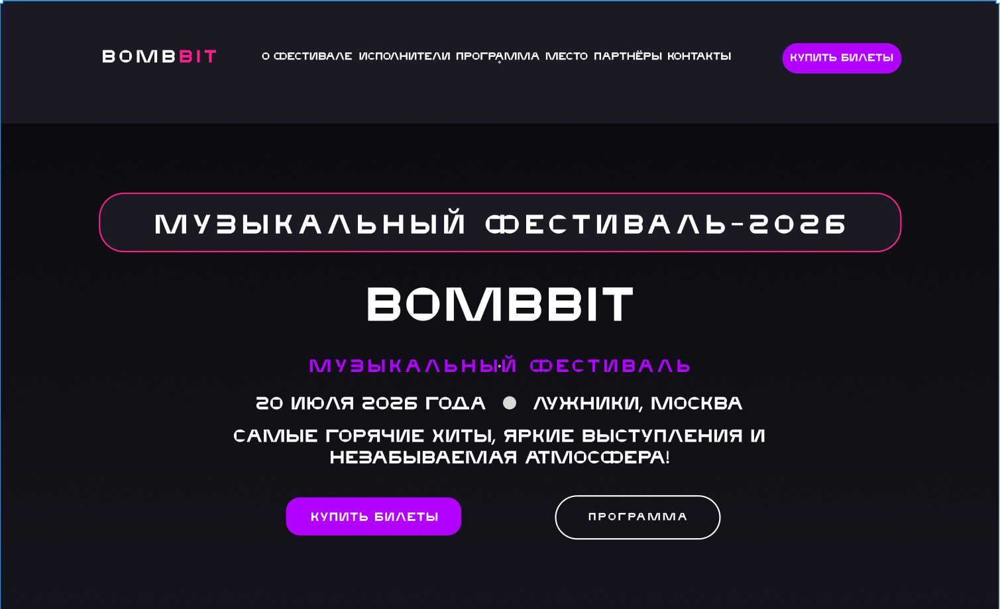

Поклонники современной музыки
Следят за исполнителями и новыми релизами, хотят быстро увидеть состав участников и понять музыкальное направление фестиваля.
Концепция промосайта музыкального фестиваля BombBit. Сайт знакомит посетителей с программой мероприятия, исполнителями, площадкой, партнёрами и вариантами билетов.

В рамках проекта я провёл анализ целевой аудитории, разработал структуру лендинга, создал визуальную концепцию и дизайн основных блоков.
Также подготовил адаптивные версии для Desktop, Tablet и Mobile и оформил интерфейс в единой стилистике, сохранив энергичную атмосферу фестиваля на каждом устройстве.
BombBit — концепция сайта музыкального фестиваля, который объединяет информацию о событии на одной странице. Посетитель может познакомиться с исполнителями, изучить расписание, узнать адрес площадки, выбрать билет и перейти к покупке.
Разработать яркий и современный лендинг музыкального фестиваля, который передаёт атмосферу события, помогает быстро найти основную информацию и подводит пользователя к покупке билета.
Коммуникационная цель: сформировать выразительный образ фестиваля и сразу погрузить посетителя в атмосферу музыкального события.
Пользовательские задачи: быстро узнать о программе и исполнителях, найти площадку, сравнить варианты билетов и перейти к покупке.
Ограничения: сохранить энергичный визуальный стиль на всех устройствах, не перегрузить интерфейс и обеспечить удобный доступ к ключевой информации.
Основная аудитория проекта — подростки и молодые люди 14–20 лет, которые слушают современную музыку, следят за популярными исполнителями, посещают концерты и активно пользуются смартфонами.
Следят за исполнителями и новыми релизами, хотят быстро увидеть состав участников и понять музыкальное направление фестиваля.
Ищут программу, площадку и варианты билетов. Для них важны понятная структура, атмосфера события и заметный путь к покупке.
Активно пользуются смартфонами и ожидают удобный интерфейс на маленьком экране без потери выразительности и читаемости.
Я создал тёмный эмоциональный интерфейс с яркими неоновыми акцентами. Контент разделён на последовательные тематические блоки: описание фестиваля, исполнители, программа, место проведения, партнёры, билеты и контакты. Контрастные кнопки и выразительная типографика помогают выделить основные действия.
Страница ведёт пользователя от знакомства с фестивалем к исполнителям, программе, площадке, партнёрам и выбору билета без лишних переходов.
Тёмная палитра и яркие акценты передают энергию музыкального события и помогают выстроить понятную визуальную иерархию.
Контрастные кнопки и выразительная типографика выделяют ключевые сценарии — от изучения программы до покупки билета.
Полноразмерная десктопная версия объединяет описание фестиваля, исполнителей, программу, площадку, партнёров и варианты билетов в одном последовательном сценарии.

Интерфейс подготовлен для корректного просмотра на компьютерах, планшетах и смартфонах. Для каждого разрешения сохранена энергичная атмосфера фестиваля, читаемость контента и доступ к ключевым действиям.


— разработана структура одностраничного сайта;
— создана визуальная концепция фестиваля;
— оформлен первый экран с основным призывом;
— разработаны карточки исполнителей и билетов;
— оформлены программа и информация о площадке;
— подготовлены версии для компьютера, планшета и смартфона.
Логичная последовательность блоков ведёт пользователя от знакомства с фестивалем к выбору билета.
Тёмная палитра и неоновые акценты передают энергичную атмосферу музыкального события.
Карточки артистов позволяют быстро ознакомиться с составом участников и временем выступлений.
Расписание оформлено в компактном формате и легко просматривается пользователем.
Тарифы разделены по типам и содержат стоимость, преимущества и заметные кнопки покупки.
Интерфейс подготовлен для корректного просмотра на компьютерах, планшетах и смартфонах.
В результате получился яркий адаптивный лендинг музыкального фестиваля с понятной структурой и выразительным визуальным стилем. Пользователь может быстро изучить программу, исполнителей, место проведения и варианты билетов независимо от используемого устройства.